Galeria przedstawia prognozy wskaźnika przestępczości dla wszystkich województw w Polsce, wygenerowane przy użyciu modelu AutoARIMA. Wykresy obejmują dane historyczne oraz prognozę na lata 2025–2029.
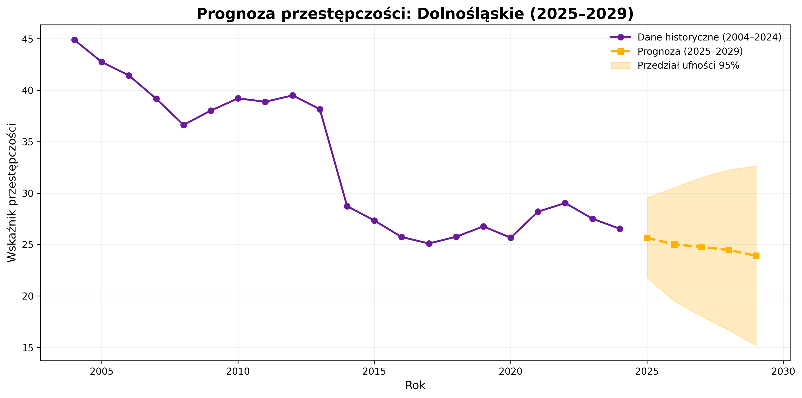
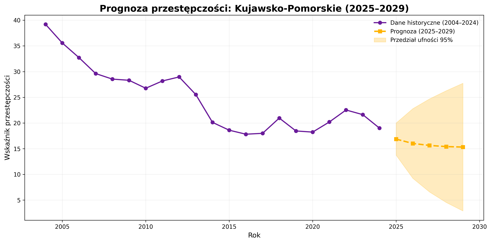
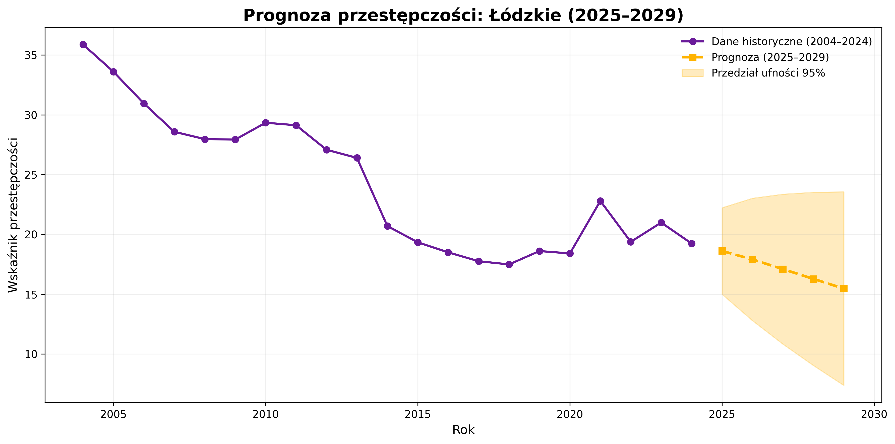
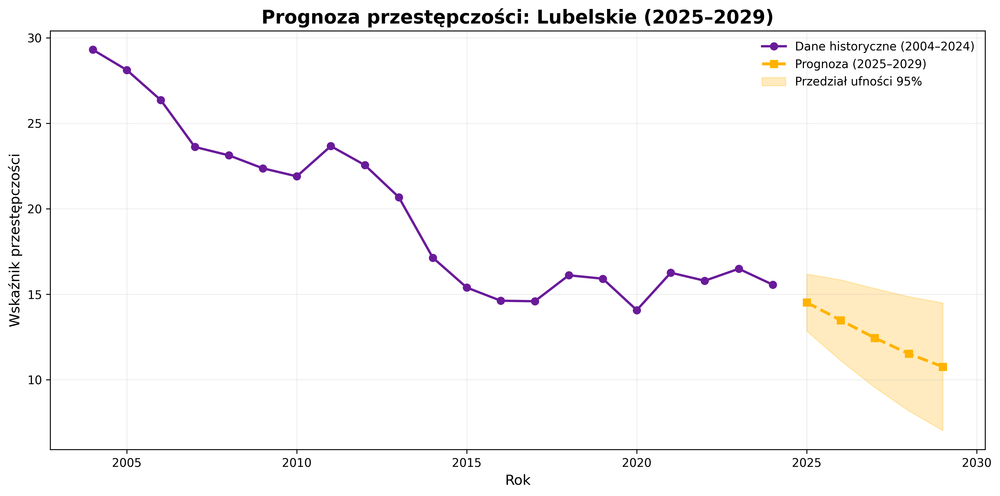
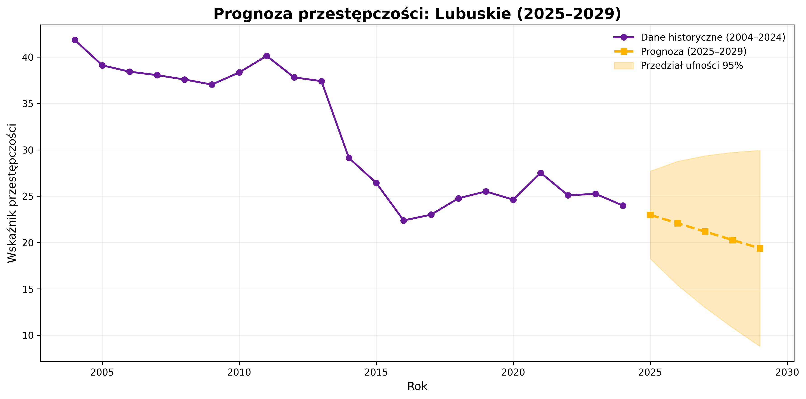
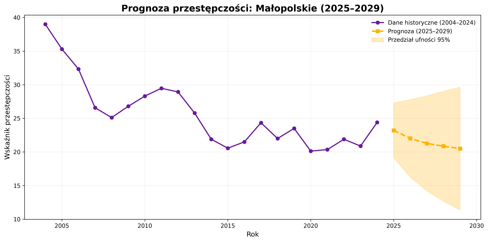
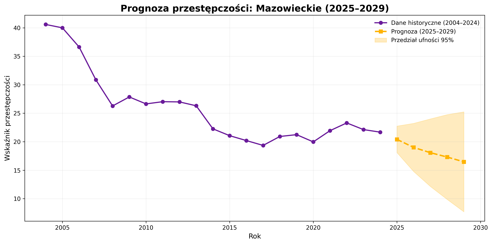
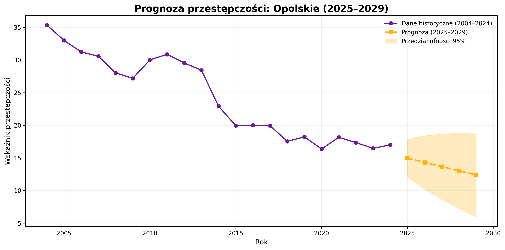
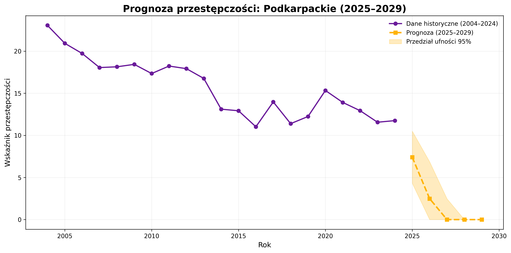
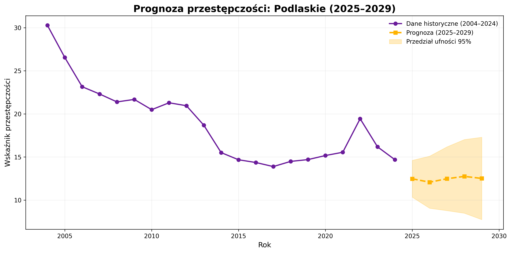
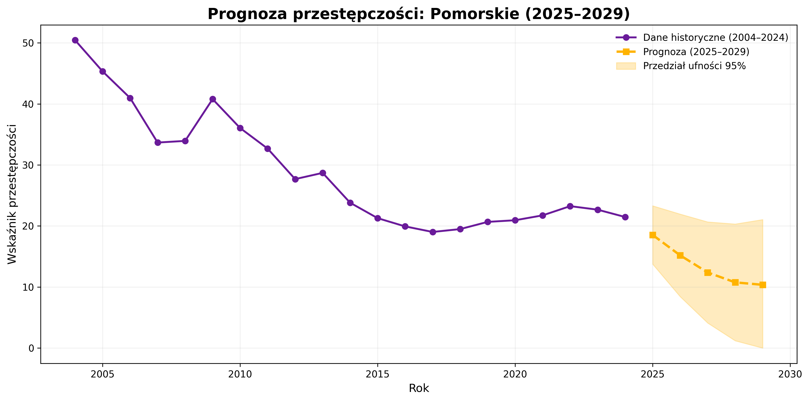
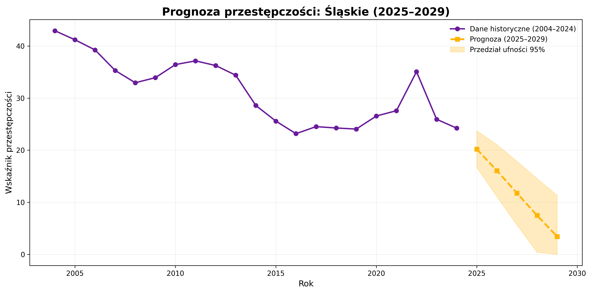
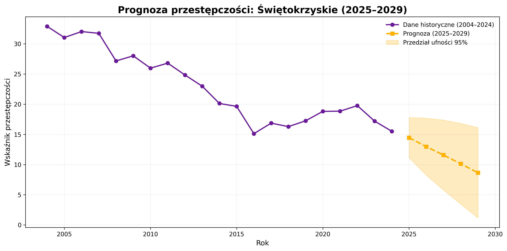
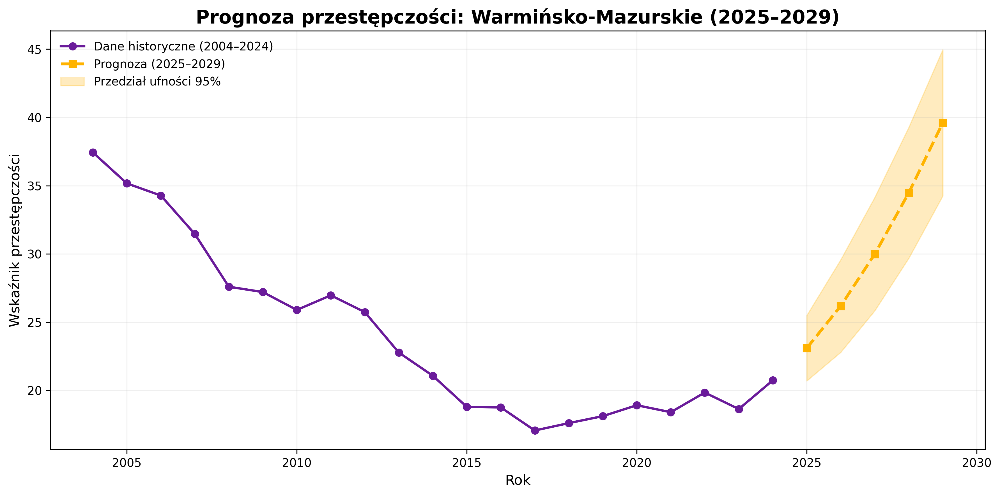
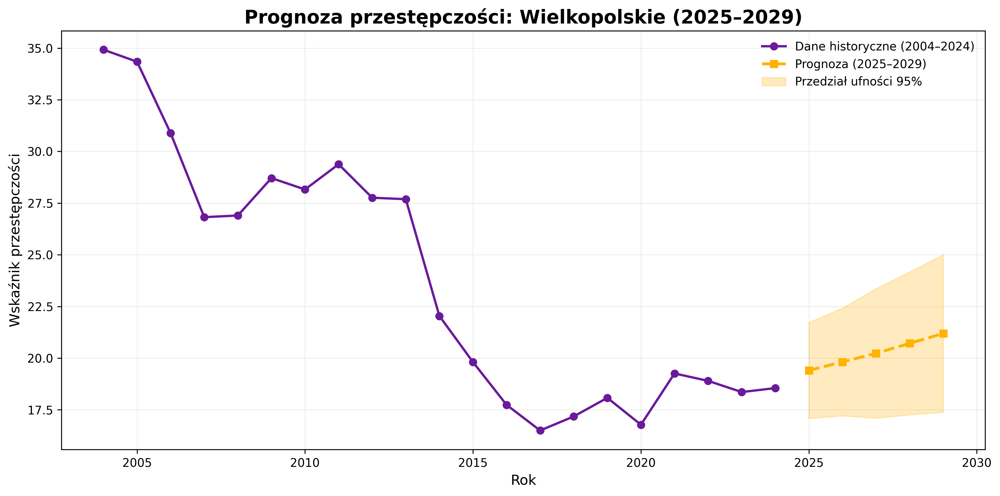
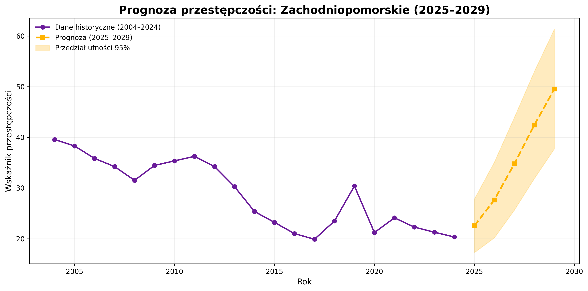